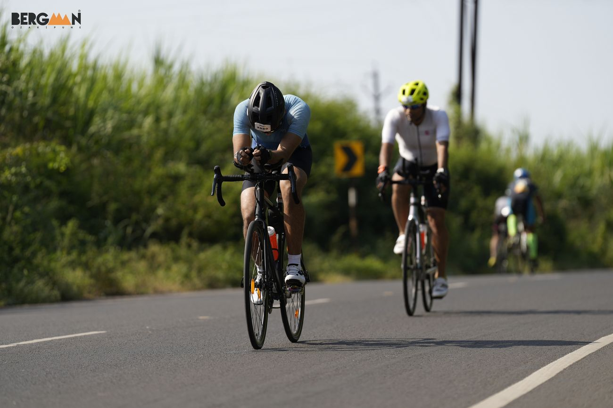

About the race
Bergman is a triathlon series run by Deccan Sports Club. This edition was in Ozar, near Pune, on 4 October 2026, and it was my first Olympic-distance triathlon: a 1.5 km swim, a 40 km bike and a 10 km run, back to back.
Course in a line or two: where the swim was, how many bike loops, how hilly, what the run looked like.
Why this race
Why a triathlon at all, and why this one. What made you pick Bergman and Ozar? (The weight-loss story is on the Route; this is the other half.)
The build-up
The body that stood on the start line was built over 36 weeks, starting on 26 January 2026. The numbers, the photos and the week-by-week log are on the Route; the food side is under What I eat.
Swim
Swim training: where, how often, any coaching, first time in open water?
Bike
Bike training: the Triban, the indoor trainer, longest ride before race day.
Run
Run training: weekly kilometres, long run, how the legs held up after the bike in practice.
Head and sleep
The mental side: the dips in motivation, what kept you going, sleep in the final weeks.
Fuel and race week
Race-week eating, what you ate on race morning, and the on-course plan: gels, bottles, anything solid.
Race day, leg by leg
Race morning: wake-up time, travel to Ozar, the mood at the start, rituals.
1 · Swim · 1.5 km
The swim: the start, the crowd, how it felt in open water, how you found your rhythm, exit time.


2 · T1
T1: what was in the bag, how long it took, anything forgotten.


3 · Bike · 40 km
The bike: loops, the road, the heat, the wind, the climbs, nutrition on the bike, speed, any drama.



4 · T2
T2: shoes, the first steps off the bike, how the legs felt.

5 · Run · 10 km
The run: the first kilometre off the bike, the heat, the aid stations, the hardest stretch, how you finished.


6 · Finish
The finish: the last stretch, the clock, who was there, the first thing you did and ate.


The numbers
| Leg | Distance | Time | Pace / speed |
|---|---|---|---|
| Swim | 1.5 km | –:––:–– | – /100 m |
| T1 | –:–– | ||
| Bike | 40 km | –:––:–– | – km/h |
| T2 | –:–– | ||
| Run | 10 km | –:––:–– | – /km |
| Total | 51.5 km | –:––:–– |
Overall position, age-group position if known, average and max heart rate per leg, the Strava links, and one line on how the day compared with what you expected.
Kit, logistics and cost
Everything I raced and trained in is on the Kit page, with links to buy it.
Getting the bike and yourself to Ozar, where you stayed, the transition checklist, anything you would pack differently.
| What | Cost |
|---|---|
| Race entry | ₹ – |
| Travel | ₹ – |
| Stay and food | ₹ – |
| Total | ₹ – |
The organisers
What worked
- –
Could be better
- –
Honest feedback on Deccan Sports Club: bib collection, briefing, course marking, volunteers, aid stations, photos, post-race.
What I would change, and what is next
What you would do differently, what you learned, and the next race (the Race Day section of the site has a slot waiting for it).